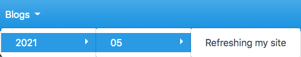

Refreshing my site
I've decided to refresh this for a couple of reasons:
- It looks a little tired. Originally created doing it "my way", mainly as a "live CV".
- I feel like I have something to contribute via blog posts.
- Interested in including some user interaction/feedback.
Choosing a site generator
My original site already worked from markdown files and I want to continue like this. I pretty much write all my documentaion in markdown. Here are the items I looked at:
Jekyll
Jekyll is a well established static site generator, with direct integration into github pages. This seemed like the obvious place to start as I'm going to host it on github-pages.
I quickly found that if you've worked with other site generators Jekyll can feel ovely complex. I suspect this is due to flexibility, but for what I needed it was too much. I also wasn't a big fan of the available themes.
MkDocs
Full disclosure, I've used MkDocs before for my work at Sanger and I already know how to use it.
Quite simply if you want to provide a site that is easy to navigate all you need to do in MkDocs is structure things in a document tree as you want to see it in the site menu:
docs/
├── blogs
│ └── 2021
│ └── 05
│ └── updating-my-site.md
└── index.md

The above requires no configurmation at all, but obviously you still want to do some.
Before I go further, I want my site to have a clean look and feel. MkDocs has a limited number of themes, Read the Docs isn't bad but there is an extension project which I recently used and have found it good. As I'm leaning towards MkDocs over Jekyll, lets take that next step before I get bogged down on layout and content...
MkDocs Material
This was the selected tool (at time of writing).
As the title suggests, this is mkdocs focused on Material Design components.
The first thing you notice when you apply the material theme is that you automatically get a left and right sidebar. The left sidebar gives you the site navigation, very similar to the document tree:

This will automatically change to a hamburger menu button if the view is narrow.
On the right the table of content for the current document is shown.
Interaction
As I'm thinking of writing blog posts semi-regularly it makes sense to give people the ability to interact via comments.
This is hosted in the GitHub eco-system and I don't really want to be pushing people to another service for comments so I did a little digging and found utterances.
This bascially uses the repos issue tracking system to allow comments, see it in action below.